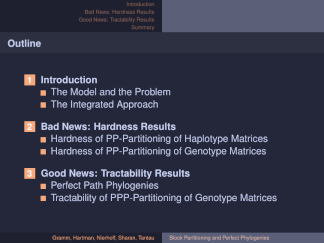
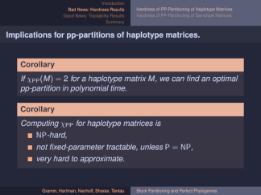
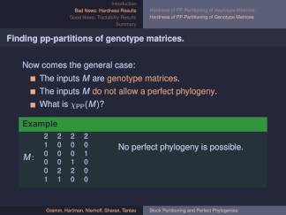
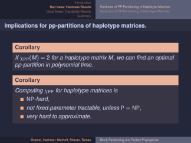
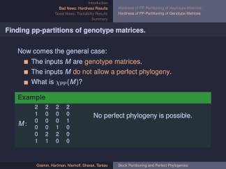
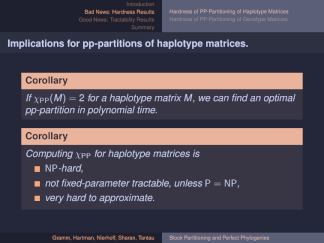
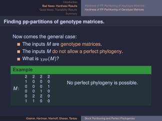

Beamer theme gallery: Luebeck Peach Macchiato
Navigate
Show all by theme
Show all by color
Show all by flavor
Switch
Theme to:
AnnArbor
Antibes
Bergen
Berkeley
Berlin
Boadilla
CambridgeUS
Copenhagen
Darmstadt
default
Dresden
EastLansing
Frankfurt
Goettingen
Hannover
Ilmenau
JuanLesPins
Luebeck
Madrid
Malmoe
Marburg
Montpellier
PaloAlto
Pittsburgh
Rochester
Singapore
Szeged
Warsaw
Color to:
Blue
Flamingo
Green
Lavender
Maroon
Mauve
Overlay0
Overlay1
Overlay2
Peach
Pink
Red
Rosewater
Sapphire
Sky
Teal
Yellow
Flavor to:
Frappe
Latte
Macchiato
Mocha
Preview



 


